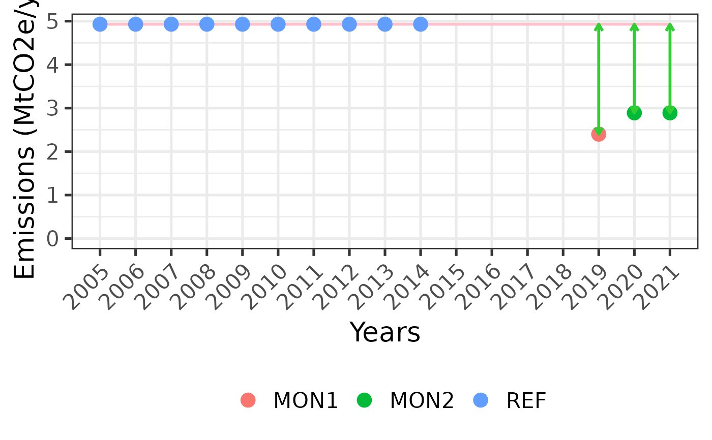

Calculate emissions based on arithmetic means
Source:R/fct_arithmetic_mean.R
fct_arithmetic_mean.RdTBD
Arguments
- .ad
Activity Data input table for the shiny app (AD_lu_transitions)
- .cs
Carbon Stock input table for the shiny app (c_stocks)
- .usr
User inputs' table for the shiny app (user_inputs). Contains the number of iterations of the MCS, carbon fraction if needed and if truncated PDFs should be used when necessary.
- .time
the 'time' table from the tool input file (see template)
Value
A data frame with arithmetic mean of CO2 emissions for each land use transition, REDD+ activity or emission reductions level.
Examples
library(readxl)
library(dplyr)
#>
#> Attaching package: ‘dplyr’
#> The following objects are masked from ‘package:stats’:
#>
#> filter, lag
#> The following objects are masked from ‘package:base’:
#>
#> intersect, setdiff, setequal, union
library(mocaredd)
path <- system.file("extdata/example2-with-sims.xlsx", package = "mocaredd")
path <- system.file("extdata/example1-4pools.xlsx", package = "mocaredd")
cs <- read_xlsx(path = path, sheet = "c_stocks", na = "NA")
ad <- read_xlsx(path = path, sheet = "AD_lu_transitions", na = "NA")
usr <- read_xlsx(path = path, sheet = "user_inputs", na = "NA")
time <- read_xlsx(path = path, sheet = "time_periods", na = "NA")
time_clean <- time |> dplyr::mutate(nb_years = year_end - year_start + 1)
res <- fct_arithmetic_mean(.ad = ad, .cs = cs, .usr = usr, .time = time_clean)
head(res$emissions)
#> # A tibble: 3 × 6
#> period_type year_start year_end nb_years sim_no E
#> <chr> <dbl> <dbl> <dbl> <int> <dbl>
#> 1 REF 2005 2014 10 1 4934807
#> 2 MON1 2019 2019 1 1 2397134
#> 3 MON2 2020 2021 2 1 2892373
res$gg_emissions
